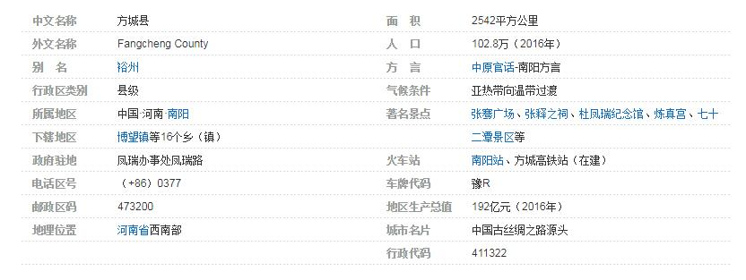
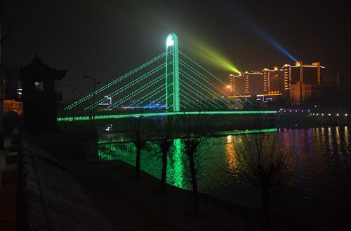

方城县是河南省南阳市下辖县，位于河南省西南部。南阳盆地东北出境之要冲，南依南阳市宛城区，北邻平顶山市，被称为南阳的北大门。
方城县辖17个乡镇街道，561个行政村，4115个自然村，5400多个村民小组。2016年总人口102万人。
方城古称裕州，历史悠久、文化底蕴丰厚。始于夏代、为禹贡豫州之域，春秋为楚地，是中国丝绸之路发源地之一。现存中华曾氏祖根地：古缯国遗址、天下第一古长城：楚长城；三国时期古战场：博望故城；东汉湖阳公主修真之所：炼真宫、佛沟摩崖石刻等文化遗址。是秦末农民起义领袖陈胜、法圣汉廷尉张释之、西汉著名外交家、丝绸之路开拓者博望侯张骞等历史文化名人故里。
2015年方城县被河南省政府纳入：河南省“一带一路”（丝绸之路经济带和21世纪海上丝绸之路）规划重点发展城市。以推动文化产业、新能源产业、中医药产业、商贸物流产业、高效生态农业的创新发展，创建国家级生态旅游示范县。2017年10月方城荣获国家园林县城。
方城县是国家园林县城、全国商品粮油生产基地县、全国农业综合开发示范县、河南省对外开放重点县、并连续三年荣获“全国科技工作先进县”，拥有优良的投资环境。形成了以新能源产业、装备制造、超硬材料、农副产品深加工为主的四大主导产业。

历史沿革：方城，春秋楚地，秦于此置阳城县，汉改称堵阳县。北魏始县方城县，后废置无常，至宋复置。金于此置裕州，领方城、舞阳、叶三县。明废方城人州。明清均属南阳府。民国2年（1913）裕州废，复置方城县。
行政区划编辑 2000年，方城县辖7个镇、9个乡。 2005年，方城县乡镇区划调整：撤销独树乡，并入独树镇；撤销博望乡，并入博望镇。截至2005年12月31日，方城县辖7个镇、9个乡：城关镇、博望镇、独树镇、拐河镇、赵河镇、广阳镇、小史店镇；券桥乡、二朗庙乡、古庄店乡、柳河乡、杨楼乡、杨集乡、四里店乡、袁店回族乡、清河乡。 2011年，经河南省人民政府批准，方城县行政区划作如下调整：撤销方城县城关镇，设立凤瑞、释之两个街道办事处。截至2011年底，方城县辖6个镇、9个乡（其中1个民族乡）、2个办事处：风瑞办事处、释之办事处、独树镇、博望镇、拐河镇、小史店镇、赵河镇、广阳镇、券桥乡、杨集乡、二郎庙乡、古庄店乡、杨楼乡、清河乡、柳河镇、四里店乡、袁店回族乡。县人民政府驻风瑞办事处。
地理环境：位置： 方城县位于河南省西南部，南阳盆地东北隅，伏牛山东麓，唐白河上游。东邻舞钢、泌阳县，南接社旗县、宛城区，西连南召县，北依鲁山县、叶县，是南阳市的北大门。县域东西长72公里，南北宽61公里，总面积2542平方公里。 气候： 方城处于北亚热带与南暖温带、长江流域与淮河流域、南阳盆地与黄淮海平原、伏牛山脉与桐柏山脉和华北地台与秦岭地槽的五个自然分界线上。年均气温14.4℃，年均日照2092小时，年均降水量为803.9毫米，无霜期220天。 地势： 地势自西北向东南倾斜，最高海拔760.3米，最低海拔108米，浅山区、岗丘区、平原区各占三分之一。
资源状况:
矿产:
方城县发现矿种有29个，探明储量的10种。主要矿种有金、银、铅、锌、铝、钛等金属矿藏和萤石、滑石、钾长石、白云岩、硅石、大理石、花岗石、石灰石、重晶石等非金属矿藏。其中，方城处于新近发现的中国最大的世界级特大型金红石矿床主地段，境内金红石矿带长30公里，总面积约60平方公里。预测远景风化壳型金红石资源量达1239万吨，原生矿资源量达4487万吨，总资源量达5726万吨，相当于500个大型金红石矿床的规模。另外，白云岩储量3亿吨，滑石储量8000万吨，萤石1000储量万吨，这些均为中国大型矿床之一。
电力:
这里北临平顶山煤海，西靠国家重点建设项目鸭河口火电厂，处于华中电网中部；中国第一条1000千伏特坑压开关站建成投用；风力发电风机高耸，蔚为壮观；西气东输工程贯穿全境。
水资源:
方城水资源丰富。全县拥有河流70余条，水资源总量11.9亿立方米，人均水资源1190立方米，南水北调中线工程穿境而过。
